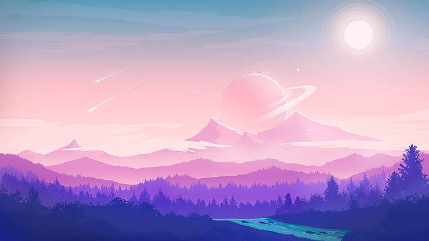
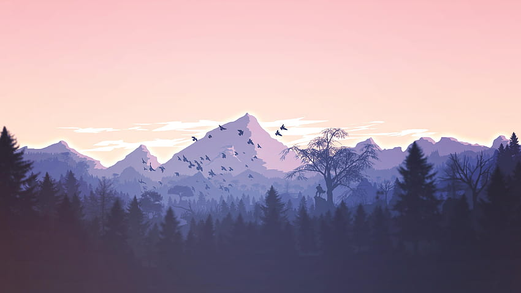
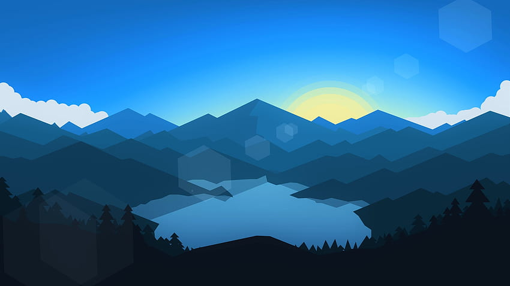
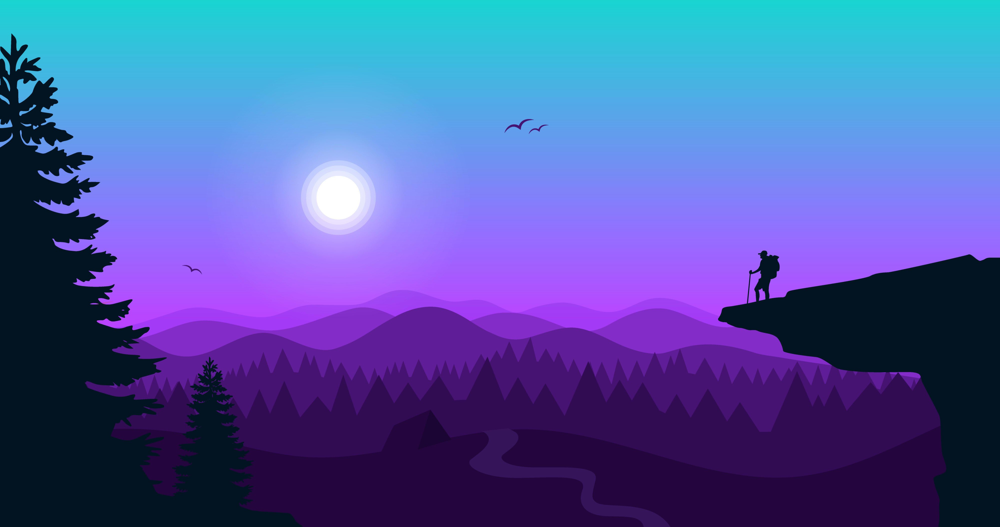
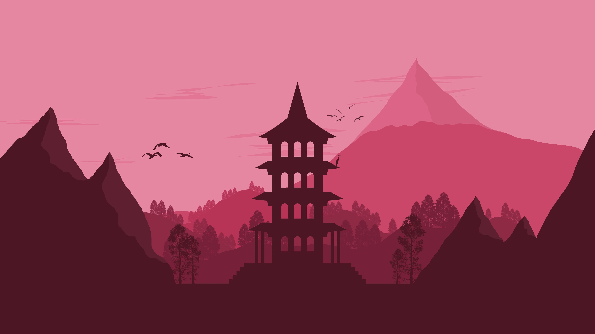
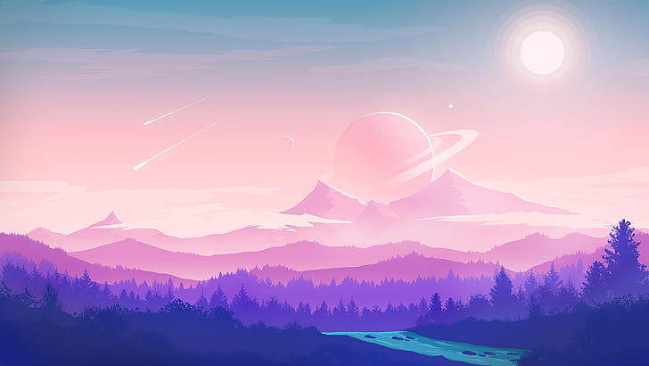
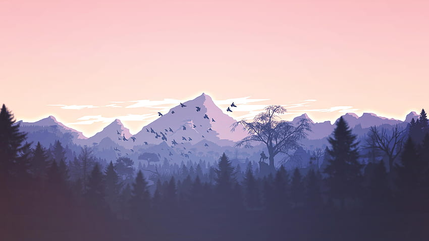
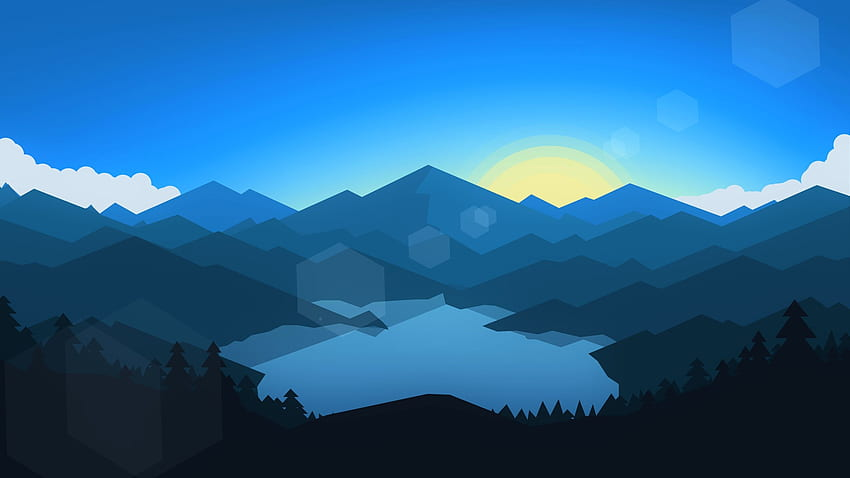
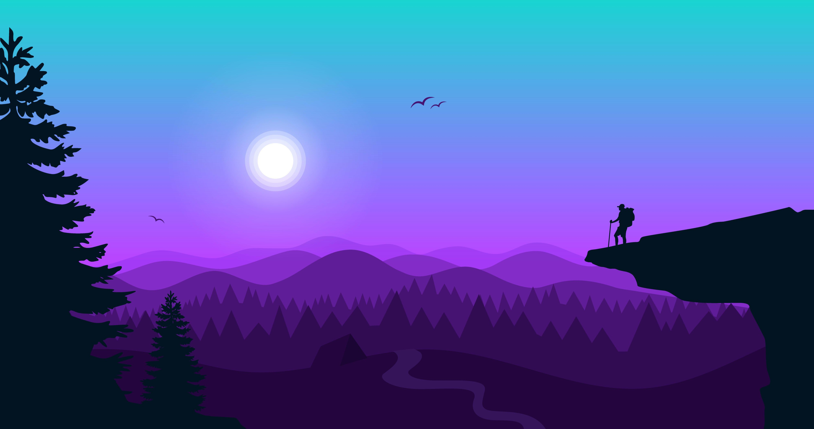
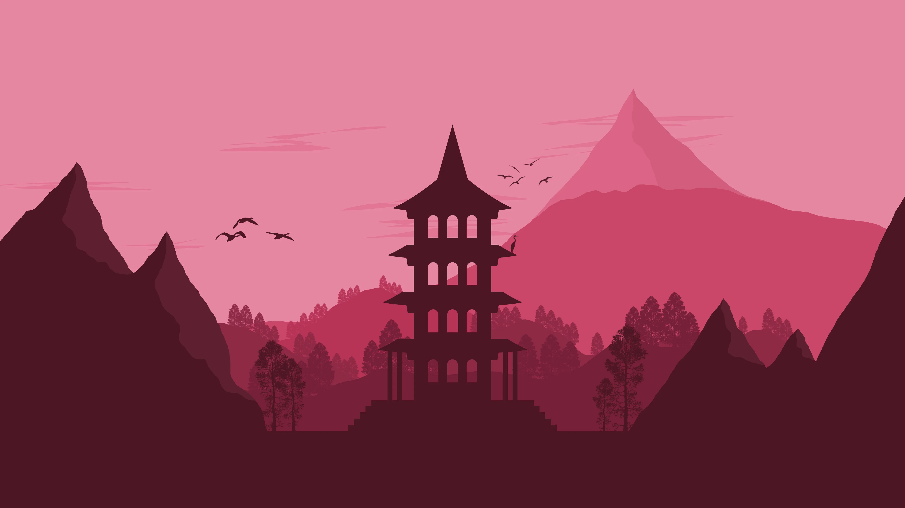

El pasillo
La imagen creada en Blender presenta un intrigante escenario donde la tecnología y la humanidad se entrelazan en una fusión futurista. En el centro de la composición, destaca la figura de un ser humano, inmóvil y enigmático. El pasillo futurista se extiende a lo largo de la imagen, con paredes lisas y relucientes que reflejan la luz de manera hipnotizante. Los tonos metálicos y colores futuristas dominan el ambiente, creando una atmósfera de innovación y progreso El contraste entre la fragilidad del ser humano y la solidez de la tecnología resalta la simbiosis entre ambos. A pesar de la aparente dominación tecnológica, la imagen sugiere que la humanidad aún mantiene un papel vital en este futuro.

El ojo
En la esquina inferior izquierda de la composición, se encuentra una figura humana de pie, en actitud contemplativa, observando hacia una imponente estructura tecnológica en forma de un ojo de proporciones colosales. La estructura tecnológica, que se asemeja a un ojo gigantesco, domina el centro de la imagen. Sus contornos definidos y su apariencia metálica generan un aire de poder y sofisticación. Desde el centro del "ojo", irradia una luz azul brillante que se expande hacia el espacio circundante, creando un halo de misterio y energía tecnológica. Detrás del humano, en contraste con la luz azul, se encuentra una luz roja que proyecta una atmósfera de intensidad y peligro latente.
Otros proyectos


 








